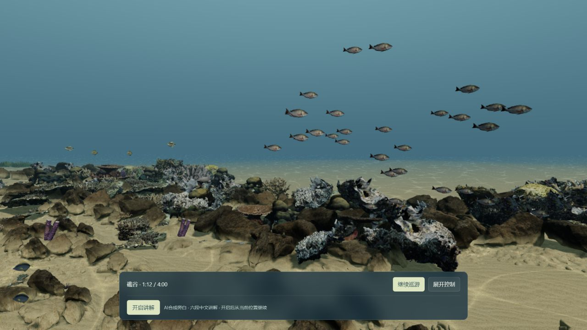
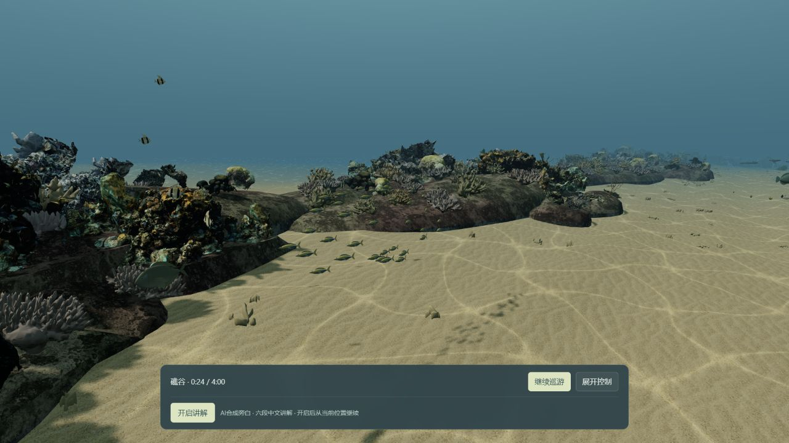
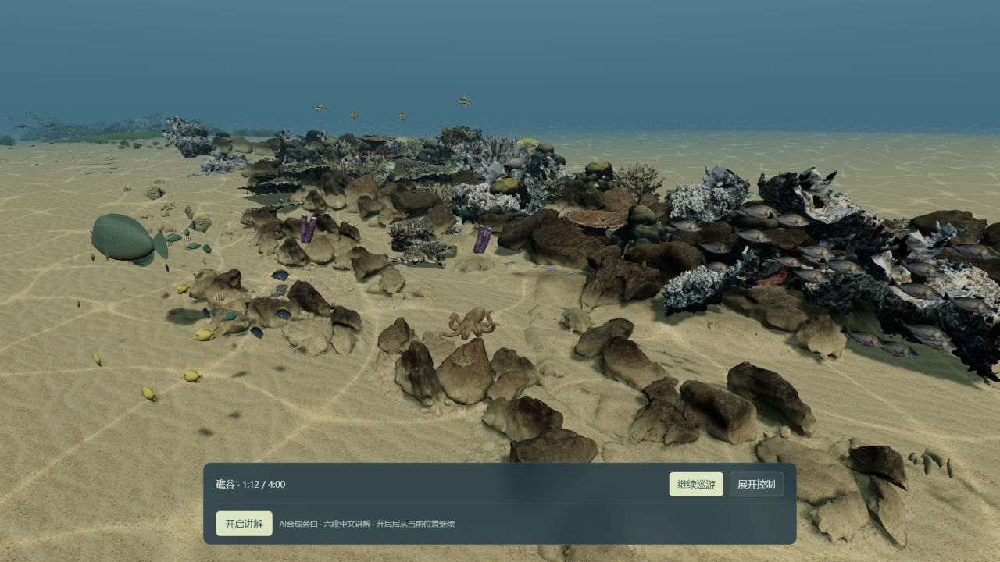
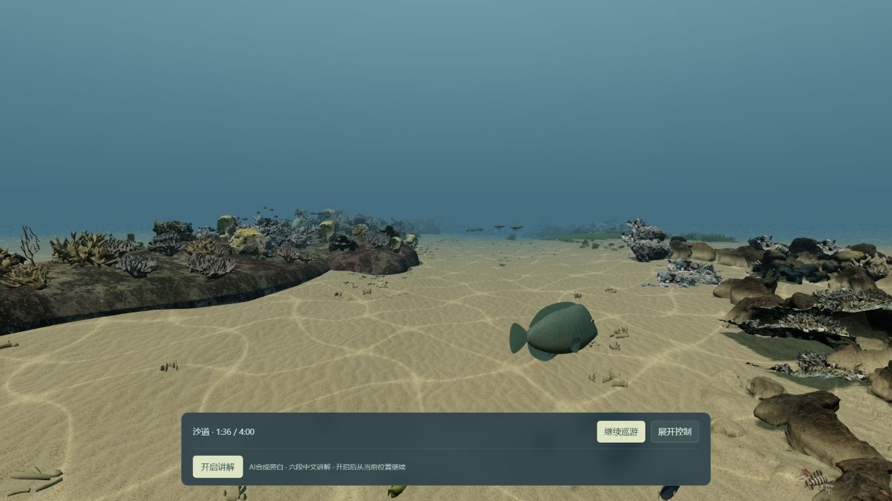
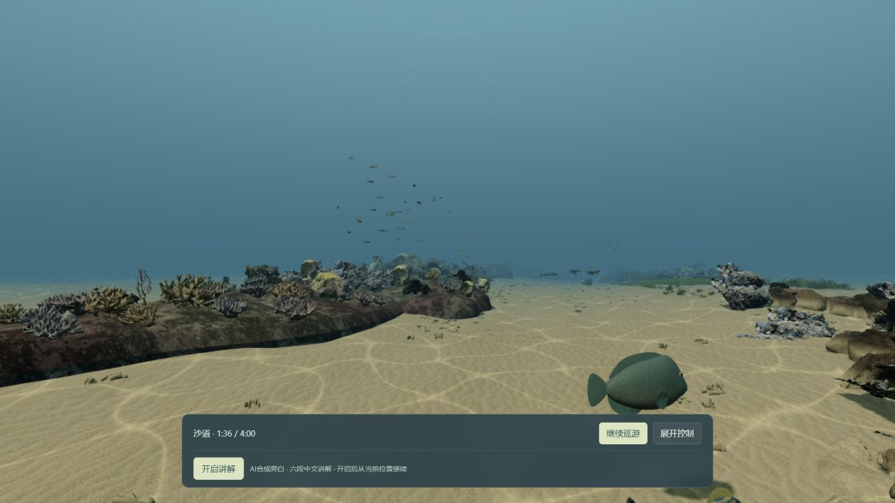
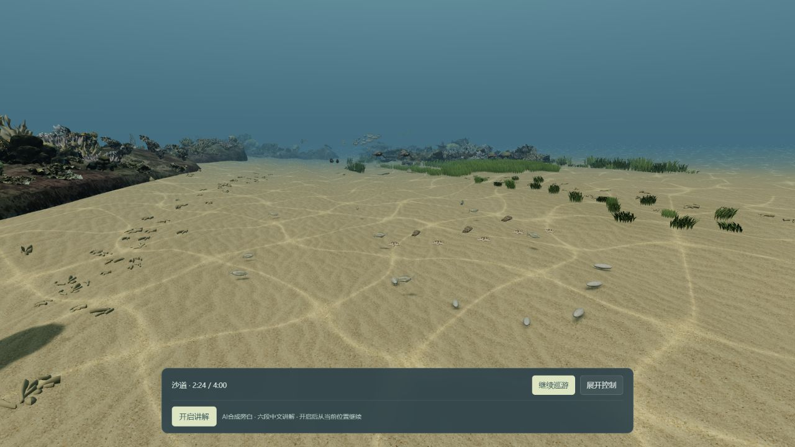
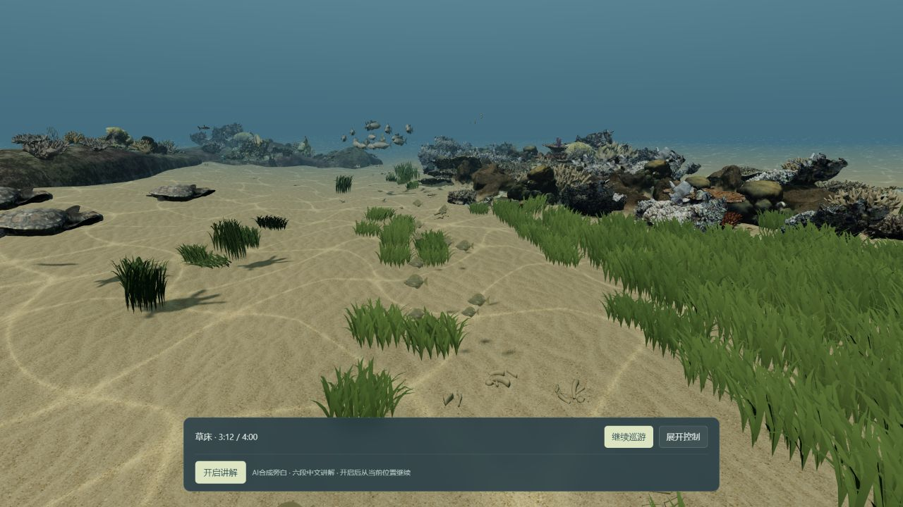
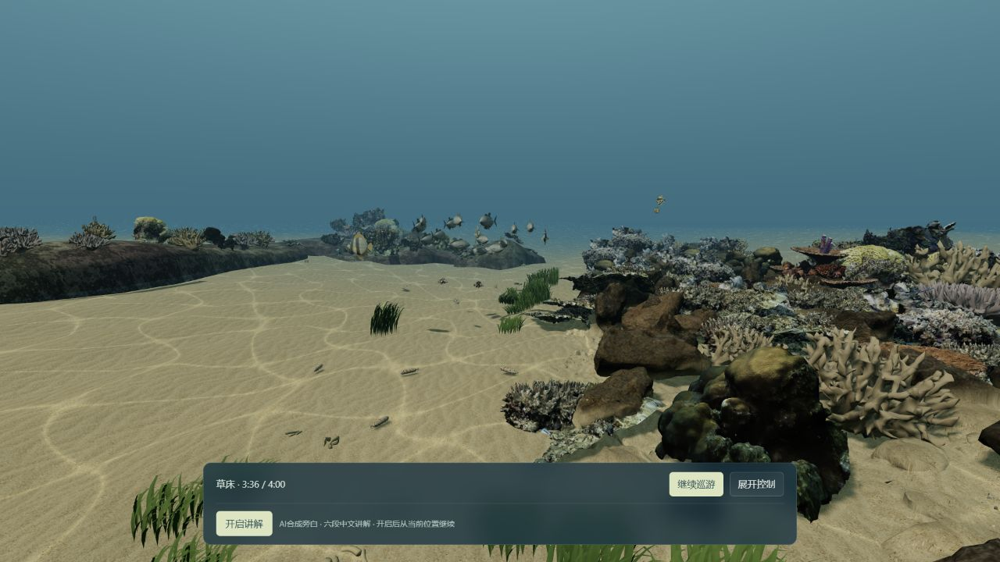
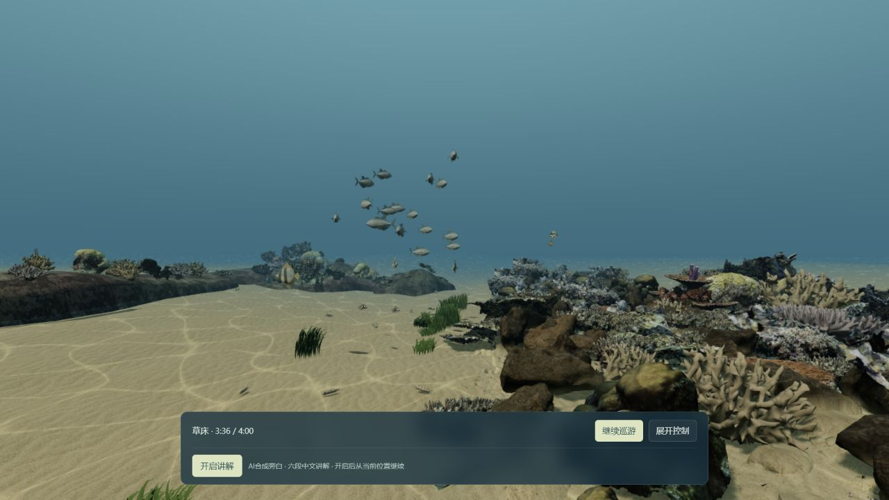

让生命进入
整片水层。
沿用原来的4分钟路线与动物资产，将四组主鱼群从近底薄带展开成有上下、远近层次的群落。镜头跟随整群，礁体与底栖生活仍留在画面中。
4分钟原路线保留
293 / 38个体 / 展示类别保持
4组 / 118只主鱼群整体分层
0新增模型、物种与贴图

这一轮改了什么
主鱼群增加纵深和垂直厚度，转向更舒缓；观察水层时减少持续向下的视线。羊鱼探底、草缘兔鱼、海龟以及其他非主鱼群动物沿用原来的轨迹。相机走过的位置不变。
这是一次有限的群落与构图升级。礁体硬边、动物模型感及部分远景偏小仍是已有差距；本轮没有更换资产，也没有把底栖动物统一抬到水中。
同一路线时刻 · 六段实景对照
左为上一归档版，右为本轮。两者种子、时间点和视口一致，镜头朝向与动物位置不同；不能作为同相机的材质或模型对照。
01 / 礁谷 · 0:24
近底薄层展开为较近主群与较远同伴，上方水域开始有生命。


02 / 礁缘 · 1:12
整群分布在中上部，同时保留下方珊瑚和礁边居民。

03 / 礁沙过渡 · 1:36
远处过境鱼群与前景礁栖鱼分开。这里仍保留开敞水域，远景鱼较小。


04 / 沙底 · 2:24
专门观察底栖生活的段落保留，羊鱼继续贴近沙面活动。


05 / 草床 · 3:12
海龟、草缘兔鱼与远处高层鱼群形成距离层次。


06 / 草床外缘 · 3:36
鲹群从贴近礁顶的薄带，展开为上中水层中的完整群落。


完整本地验证
| 项目 | 实测结果 |
|---|---|
| 完整巡游 | 1倍速 / 240模型秒 / 240.18实秒，无中断 |
| 画面流畅度 | p95 12.4ms / 最长137.4ms / 渲染比例始终1 |
| 环境 | 1280×720 / DPR约1 / RTX4070 Laptop |
| 讲解与错误 | 六段playing / 无讲解错误 / 控制台error、warn为空 |
| 本地加载 | 3.347秒，已有缓存，非公网冷启动 |
| 相关检查 | 26项通过 / 构建11.79秒 / 9运行文件实播前后一致 |
帧间隔记录仅代表本机、本地与已有缓存，不是手机、所有设备或远端冷启动承诺。自动投影检查也不等于无遮挡或纪录片级真实感。